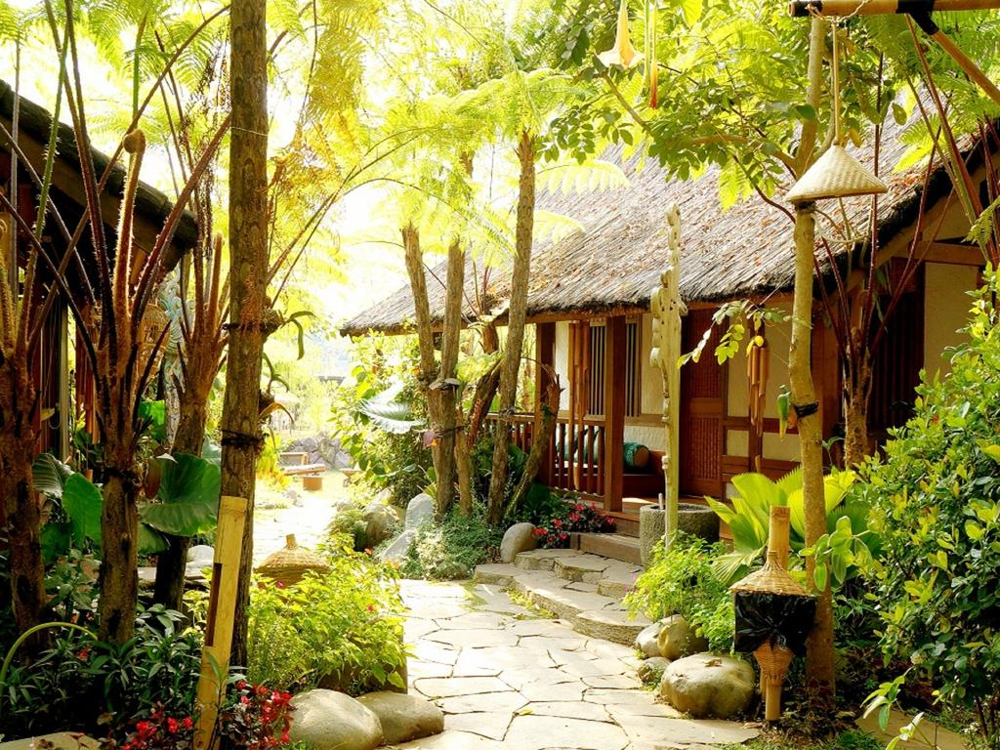
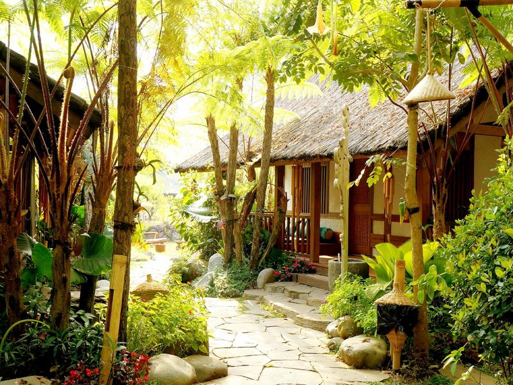

Dusun Bambu is an exemplary ecotourism in West Java that marries the beauty of nature with the charm of Sundanese traditional culture. Spanning over 15 hectares of land at the foot of mount Burangrang. Dusun Bambu was prehviously an abandoned agricultural land, which was left in deplorable conditions. in 2008, a group of Indonesian businessman took initiative and repaired the damaged ecosystem, turning it into a bamboo conservation area.
The arresting beauty of Dusun Bambu’s nature landscape has fascinated many people. With its slightly hilly topography, hikers and bikers find it an ideal place to explore Burangrang’s nature and cultural points of interest terraced rice fields, a small lake and a small river give the area its distinct character. Dusun Bambu has been designated for preservation of native plant species, including trees, flowers and especially bamboo. Here families can explore nature and local traditions in fun ways.
Dusun Bambu has unique restaurants inspired by famous folktales in West Java. The Kampung Layung Villas is an accomodation that promises a great value along with the space, privacy and comfort. Ample parking space and shuttle bus has made every visit to Dusun Bambu conve- nient. Outdor activities are available including camping.
 
